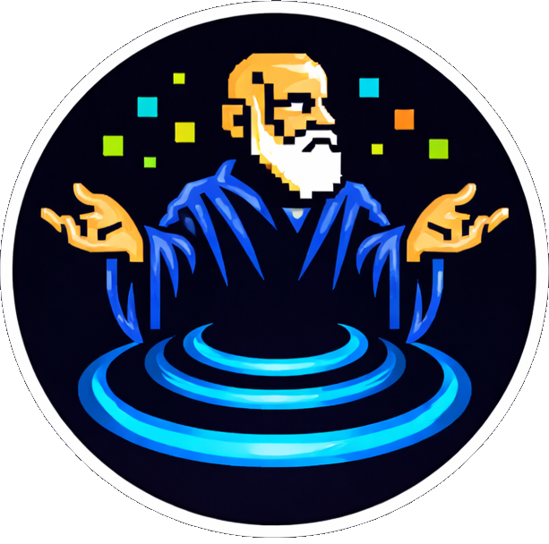

Independent plan review for AI coding agents.
Check structural assumptions against reality before things go wrong.
AI assistants are writing implementation plans, migration specs, architecture proposals, and project roadmaps for software-teams and builders. These plans look polished and confident — but no one is verifying they actually match reality.
Seldon is a second pair of eyes. Like having an independent reviewer read a contractor's proposal before you sign — it checks the plan against your actual project, flags what doesn't add up, and tells you what to fix before your team spends days building the wrong thing.
Less rework. Fewer surprises. Faster, safer delivery.
Your team uses AI to plan features and migrations. Seldon gives you a plain-English verdict before work starts — so you catch bad assumptions before they become expensive rework.
Read the verdict, not the code.When an engineer shares an AI-generated plan, Seldon tells you what's solid and what's missing. No technical background needed to understand "3 blocking findings."
Gate plans before sprint commitment.You prompted an agent to write a plan. Run /seldon before you build. It checks file paths, dependencies, and sequencing against your actual codebase in seconds.
One command before you start coding.Add Seldon to your workflow: agent writes the plan, Seldon reviews it, the team reads the verdict together. Everyone sees the risks before committing resources.
Shared decision-making, not blind trust.AI agents generate confident, detailed implementation plans. But confidence is not correctness.
Plans reference APIs, schemas, or migrations that don't exist in the workspace.
Step 3 depends on Step 5. Prerequisites are assumed, never verified.
The agent that wrote the plan can't objectively evaluate its own assumptions.
Most teams do one of these. None of them scale.
Senior engineer reads every line, cross-references the codebase, checks file paths by hand. Thorough but expensive.
Catches most issues — if they have timeGlance at headings, check it "looks right," approve. The most common approach. Misses everything that isn't obvious.
Catches formatting issues onlyAutomated review against the real codebase. Checks every file path, dependency, and prerequisite. Returns a structured verdict.
Catches what the codebase can proveFeed Seldon a plan. It returns a structured verdict with evidence.
Clean migration plan. All referenced files exist, deps are pinned, rollback tested.
Assumes schema v3 migration exists → no v3 file in prisma/migrations/
3 blocking findings: missing auth middleware, circular dep in step 4, no rollback plan.
The plan is solid. Claims match the codebase, sequencing is correct, no missing prerequisites. Safe to start building.
Mostly sound, but has issues that should be fixed first. Non-blocking findings are suggestions; blocking findings must be addressed.
Fundamental problems. Missing files, broken dependencies, impossible sequencing. The plan needs significant rework before it's actionable.
High confidence. Every claim was verified against the codebase. Strong evidence for the verdict.
Moderate. Most claims verified, but some couldn't be checked locally (external APIs, runtime behavior).
Low. Significant gaps in what could be verified. The plan touches areas the reviewer couldn't fully inspect.
Very low. The reviewer couldn't verify most claims. Treat findings as directional, not definitive.
A second model reads the plan, verifies claims against the workspace, and scores against a rubric — independently from the agent that authored it.
Read plan file and any supporting docs
Verify file paths, APIs, deps, schema
Score fit, correctness, sequencing, safety
JSON with findings, evidence, references
Seldon doesn't replace anyone. It's a gate between planning and building.
The verdict is plain English. Everyone on the team can read it — not just engineers.
Steer the review toward what matters most. Default is balanced.
All rubric dimensions weighted equally. Concrete evidence over speculation.
/seldon my-plan.mdService boundaries, dependency sprawl, migration risk, hidden integration work.
/seldon --focus architecture spec.mdSuccess criteria, regression detection, testability of quality claims, observability.
/seldon --focus evaluation spec.mdUser-visible failure modes, sequencing gaps, scope realism, product risk.
/seldon --focus product spec.mdOwnership, alerting, rollback plans, failure handling, maintenance burden.
/seldon --focus operations spec.mdHallucination controls, citation integrity, access assumptions, unsafe fallbacks.
/seldon --focus safety spec.mdWhen no external judge is configured, Seldon runs inline — the same Claude session reviews the plan itself. It still checks your codebase for evidence, but the reviewer shares the same model and biases as the author.
Best practice: use a judge from a different provider. Different training data means different blind spots — that's where real bugs get caught.
Works out of the box. Good for quick checks, but shares the same blind spots as the author.
# no setup needed
/seldon my-plan.md
Different training = different blind spots. The recommended setup.
# activate the judge
cp judges/openai.sh judge-runner.sh
Full codebase access in a sandbox. Schema-enforced output.
# activate the judge
cp judges/codex.sh judge-runner.sh
Claude generates a 4-phase plan: new Stripe webhook, migration script, updated checkout flow, monitoring. It looks thorough. Sarah is about to approve it for the sprint.
/seldon payments-plan.md in Claude Desktop30 seconds later, Seldon returns request_major_revision with 2 blocking findings.
Phase 2 references stripe_webhook_v2.ts which doesn't exist. Phase 3 depends on a database column (payment_intent_id) that the migration in Phase 1 never creates.
Without Seldon, the team would have discovered these gaps mid-sprint — 3 days of wasted work and a missed deadline.
Two minutes of review saved a week of rework.
"At critical decision points, a holographic Seldon would appear and say: here's what you got wrong."
Named after Hari Seldon from Asimov's Foundation. He developed psychohistory — a science that predicted where civilizations would fail by checking structural assumptions against reality.
That's what /seldon does for your plans.
Works as a plugin for Claude Code (CLI) and Claude Cowork (desktop). No setup beyond installing the zip — no API keys, no config, no terminal skills needed.
# 1. Download the latest release from
# github.com/degrammer/seldon/releases
# 2. Install the zip as a plugin
claude plugin install seldon.zip
# 3. Review any plan
/seldon my-plan.md
"If you're seeing this, here's what you got wrong."
— Hari Seldon, probably github.com/degrammer/seldon